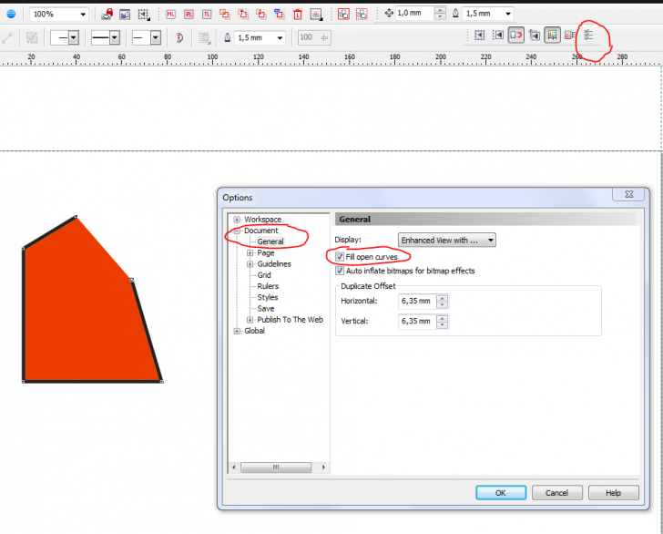
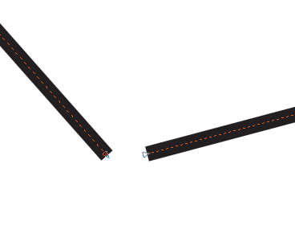

Не получается заливка
Andrey67 / 06.02.2010, 17:56/00:41
Форум:
Здравствуйте! Не смог прикрепить файл, поэтому попытаюся на словах. Построил объект иэ дуг и прямых. Сначало строил окружности и прямые, затем часть окружностей убрал и получились дуги. Но вот заливка не получается, скорее всего, что программа считает фигуру не замкнутой, хотя на глаз это не видно. Я уже пробовал и объединение и группировку, но ничего не выходит. Как же мне залить фигуру?

Добавил возможность группе "начинающиеся" добавлять изображения в форум :)
Спасибо, но теперь заливается не там, где нужно. Может, я изначально неправильно строил фигуру? Т.к. мне нужны точные размеры (радиус дуг, положение центров дуг) строил по координатам окружности, прямые. Потом с помощью "удаление виртуального сегмента" убрал всё ненужное. Вот такая картинка получилась, при увеличении видно, что между прямой и дугой есть небольшей зазор, видимо, в этом и причина? А как нужно "правильно" строить такую фигуру?
Andrey67, такое возникает когда фигура не правильно сделана. Любую форму лучше создавать из примитивов, добавляя узлы и загибая отрезки как нужно. Может быть она у вас просто не слита в одну, или узлы не замкнуты.
На картинке я показал, как строил. Так нельзя? А если всё же так уже сделал, как исправить, как замкнуть узлы, чтоб размеры не ушли?
Andrey67, во первых слить кривые в одну. Для этого нужно выделить их все и применить функцию Combine (Ctrl + L). Затем выделив кривую инструментом Форма (F10), попробовать соединить все узлы автоматом (кнопка Auto-close). Если не поможет то соединять узлы вручную - методом перетаскивания одного узла на другой.

Что то не получается как мне нужно. Если использовать соеденить все узлы автоматом, то появляется доп. линия. А если вручную тянуть, линия смещается и уходит размер, который мне нужен. Можно сделать, чтоб один конец линии (дуги) зафиксировать, а когда тянуть за др. край, линия просто удлинялась и шла по дуге, не меняя радиуса?
Пошел другим путем. Нарисовал в SolidWorks, сохранил JPEG и в Corel. Отмаштабировал. Но при увеличении видно, что окружность не круглая, а приплюснутая хотя размер правильный 10х10.Да и весь контур, как от руки нарисован. Как исправить?
Andrey67, вы себе трудности сами создаёте. всё делается в кореле за минуту, просто знать нужно особенности вектора. Советую сначала разобраться с ними, а потом браться за построение ваших фигур. :)
Sancho, для моих целей одного Corel мало, нужно и трассировщик печатных плат, CAD, и управляющая программа для станка ЧПУ и многое другое. Поэтому, я отдаю предпочтение на изучение тех програм, которые мне больше необходимы для работы. Того уровня знания Corel, что я знаю, до сих пор хватало. Но сейчас не получается. Поэтому и просил помощи на форуме. Просто ради одной фигуры потратить уймы времени на изучение Corel, сограситесь, не рационально. Тем более, что в итоге может получиться, что Corel вообще не способен построить фигуру с большей точностью? Если можно, подскажите, как рационально и точно Вы бы строили данную Фигуру.
Спасибо!
Страницы